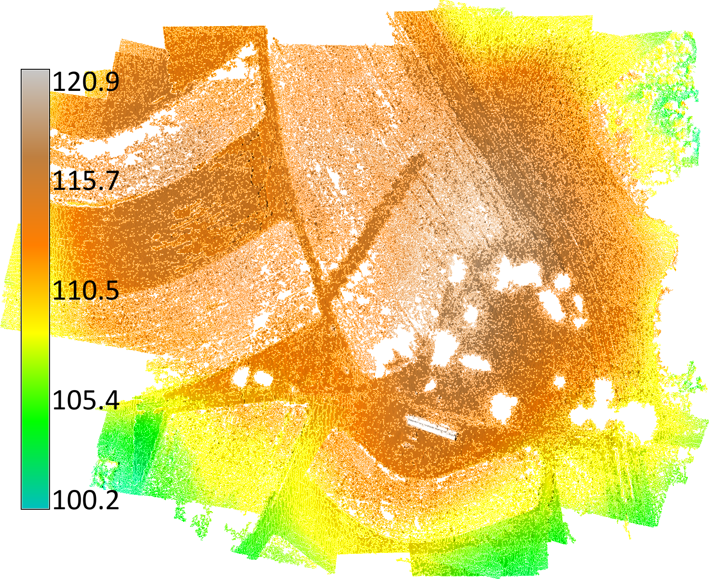
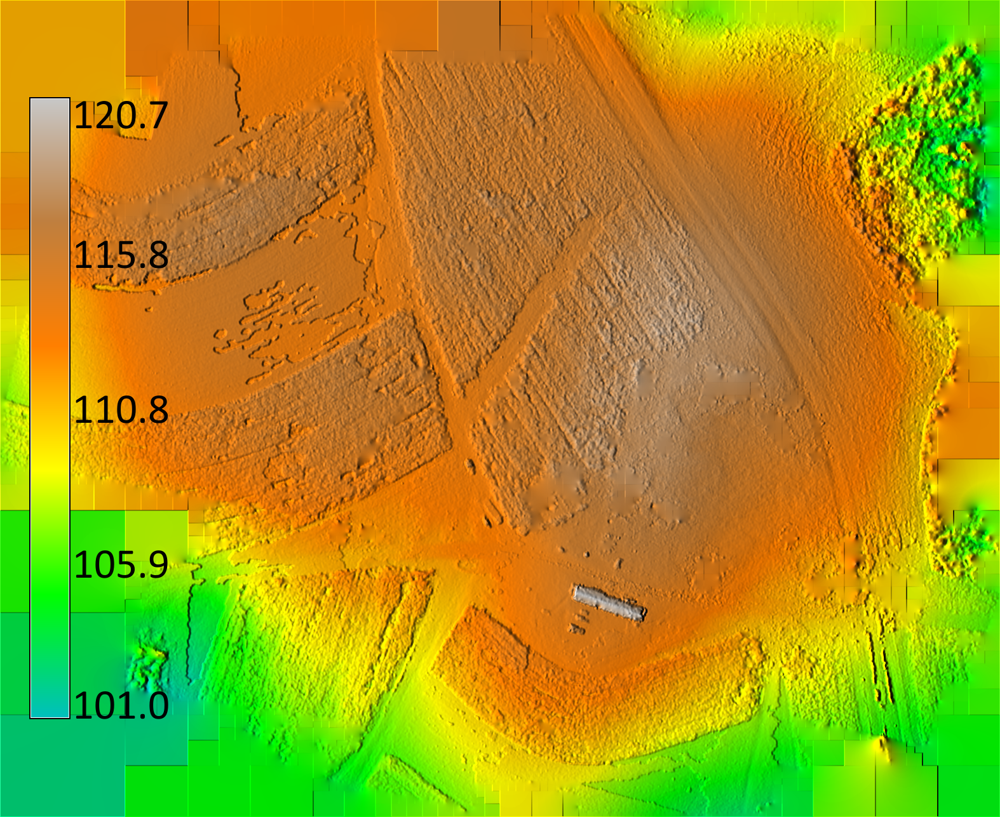
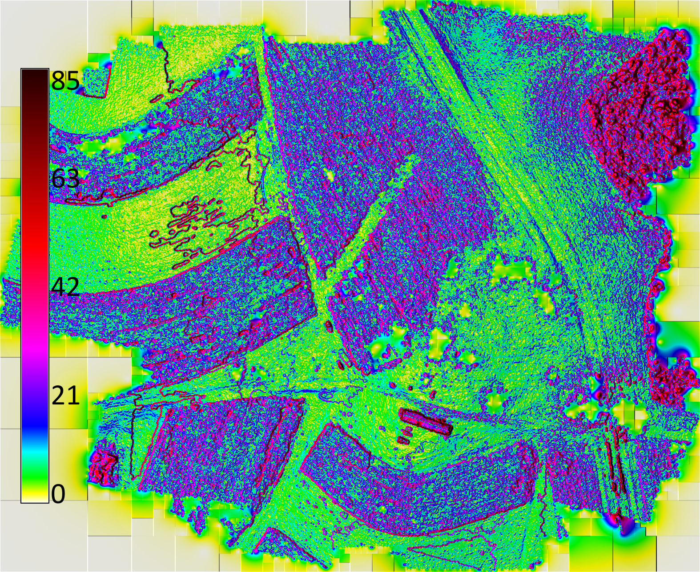
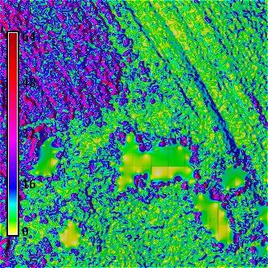
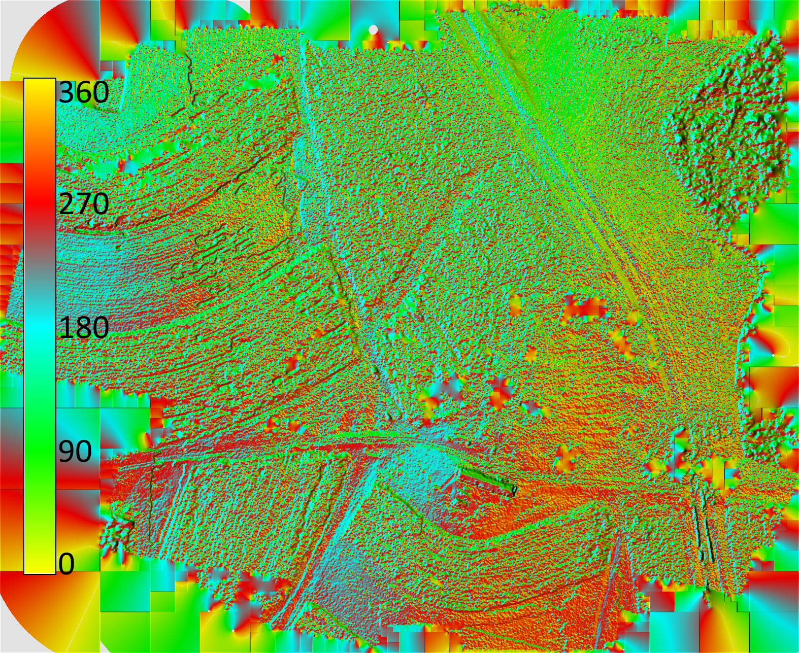
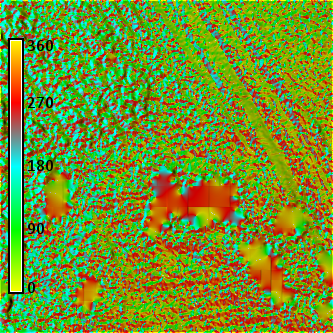
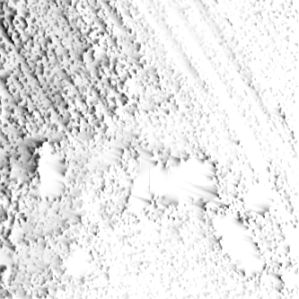
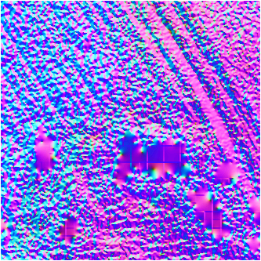

Methodology
I computed a digital surface model and orthophotography for 06.20.2015 UAV flight with OpenDroneMap. I binned and interpolated the digital surface model and computed the slope, aspect, relief, skyview factor, principal component analysis, and water flow in GRASS GIS with a Python script. My DSM processed with OpenDroneMap had holes where there were trees. In terms of microtopography the crops and agricultural furrows are clearly visible.
Script
uav_analytics_odm.py
Binned digital elevation model

Interpolated digital elevation model

Slope

Detail: slope

Aspect

Detail: aspect

Detail: skyview

Detail: pca
